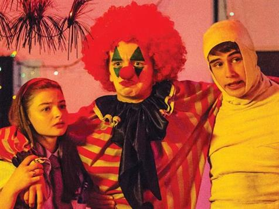

Children's TV - networks try same fight over and over again
PATRICIA EDGAR
From day one, the commercial television networks have fought quotas for children's TV. Here's an elegant summary.

Australian Kids' TV is having the worst year of its life, again. Image: 2014 ACTF series, The Worst Year of My Life, Again.
The Commercial television networks are calling for an end to the children's television quotas. (The Age 21/7/17) There is nothing new about that. The producers want quotas applied across all platforms. But the central issue governing children's media should not be to find ways to support an existing production industry or relieve the networks of their obligations it should be about how best to serve the interests and needs of children.
The industry has always been hostile to the Children's Television Standards (CTS) since they were first mooted in 1976. They claimed then they did not have the resources for such programming. They asserted they did not know what a children's program looked like, that Australian kids couldn't act and they would not watch such programs.
The networks have cried the proverbial 'wolf' for 40 years. First, they said the high costs of technology in converting to colour in 1976 would consume all their revenue. Colour brooved to be a bonanza. And when the Australian Broadcasting Tribunal (ABT) set up the Children's Program Committee (CPC) to implement the Standards in 1979, the networks undermined the process by withdrawing their representative. Fifteen commercial television licensees challenged the validity of the ABT's power to classify programs, in the Federal Court. They lost, but pursued their argument in the High Court which held the ABT's Standards were invalid. So Labor's Communication Minister, Michael Duffy, introduced an Amendment Bill affirming the ABT's powers. Finally the networks had no choice but to comply or risk losing their license. This process took eight years.
For the following decade the system of subsidy and regulation worked. Quality drama was produced which attracted the child audience and spawned both a domestic and international industry. But in 1995, with the best of intentions, the Australian Broadcasting Authority (ABA) made a strategic error. They doubled the quota and things began to unravel. It was easier to fill the quota with long running series and animations undermining the diversity of live-action programs. The bigger problem was that the Film Finance Corporation (FFC), the major source of funding for children's programs, was facing cut backs. In 1994 the FFC invested $ 20 million, 23% of its funding into children's programs. By 1998 their investment had dropped to $9.3 million. This was when the drama quota doubled.
Networks, aware of this problem, drove down license fees and squeezed producers. The number of live-action productions and the number of active producers declined. The networks met their quotas but buried programs and did nothing to entice an audience. The problems were exposed by the ABA's evaluation of 20 Years of C, released in March 2000. But nothing was done to redress the problems.
Enter the idea of an ABC digital children's television channel. Big promises were made and exaggerated claims persist about this experiment. The ABC Managing Director, Mark Scott claimed it would mean 'the renaissance of children's television'. Prime Minister Rudd went along with the channel. Then the ABC decided they would have, not one, but two digital children's channels - one for preschoolers and one for school-age children. That meant 10,192 hours of programming to schedule across a year. And how could these hours be filled but by animations and low cost, studio-based repeat programs, which is what the ABC called for? They needed them quickly - 'think adult formats like Rove, Thank god you're here and Specs and Specs ' was the call. Some renaissance!
These channels filled a vacuum for a brief time as they were the only free-to-air all day show on the box. But then, as those in the industry should have known, the audience began to shrivel. We knew from research studies, as early as ten years ago, in the UK, in the USA and in Australia, that kids were deserting scheduled television.
This means the networks now have a legitimate point. The audience they have been running away from for forty years is running away from them. But the answer, as they are urging, is not to abandon the quotas and redirect the funds to prime time programs. They have a responsibility to the community, as licensees, for their privileged role. The $30 million dollars they have been spending belongs to children's programming and should be levied to help support a new service.
And the ABC, now being castigated for reducing their program expenditure on children, when they have had $350 million withdrawn from their funding and the child audience is following the Pied Piper of social media should rethink their children's service. Close down ABC3. Consolidate and refresh ABC2 for 2-9 year olds, for there is no more important group of viewers deserving priority than those in their early years. Education does not begin when children go to pre-school or school for the first time. Eighty-five per cent of brain development takes place in the first few years of life. There is a great opportunity here, as part of the media reviews, to accommodate quality early childhood programs into the policy mix. This is a legitimate role for a public broadcaster. The BBC earlier this month announced additional funding of 31.4 million pounds over three years for on-line projects in an attempt to remain relevant for their child audience.
For Australian 9-15 year olds a new service should be established that is more appropriate for their needs and interests. It should be redesigned from the ground up. This service should be accessible across multiple platforms accommodating distribution to a desk-top, online or to mobile devices. It should be a robust, flexible, platform that lets kids do what they want in the ways they want, when they want, but provide challenging, innovative projects.
It is time for a new beginning in the interests of children, their development and education, and for a digital production industry which should comprise innovative thinkers who would design the content for a new destination for children. I wrote the arguments for the children's drama campaign which are still being quoted but this is a different time with very different challenges. A solution will not be found by tinkering with quotas.
FIRST PUBLISHED ON TUESDAY 25 JULY, 2017
ABOUT THE AUTHOR
Patricia Edgar was Chair of the Australian Broadcasting Tribunal's Children's Program Committee 1978-84. She was the founding director of the Australian Children's Television Foundation 1982-2002 and Deputy Chair of the Film Finance Corporation 1988-1996. She is Chair of the World Summit on Media for Children Foundation.